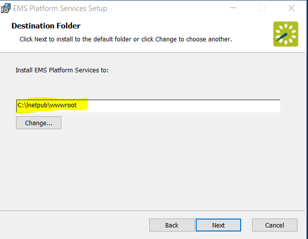
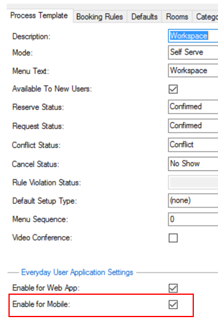

See Also: System Requirements
1. Install the
- Navigate to emssoftware.com/support. Log in and locate EMS Platform Services.
- Download the EMSPlatformServices.msi file.
- Run this file on your web server.

Note: You will need to enter the SQL server and EMS database, configured to allow external connections. Make a note of the database name. The typical install path is C:\Inetpub\wwwroot.

- When all prompts have been completed, click Install. The API is installed on your web server.
- You will also need a Virtual Directory Name (typical default is EMSPlatformServices). Make a note of the new site you have created.
2. Initial Configuration
- Access URL for
- Login using your credentials depending on your authentication type. Please refer to configuring
- Click on the Integrations tab in the sidebar and select EMS Mobile:

- Select authentication method for everyday users.
- EMS Native Authentication
- LDAP Authentication
- NTLM Authentication
- Open ID Connect Authentication
- SAML Authentication
- Header Authentication
|
Note: In addition to the authentications above, EMS Mobile App supports Two-factor authentication and Persistent authentication. |
- Click "User authentication is persistent" box to allow the user to remain logged into the
- Install the
3. Enable Everyday User Booking Templates
EMS V44.1 allows you to select which process templates (e.g "web process templates") will be enabled on your users' mobile devices. From the Admin page for templates in the

|
|
Note: |